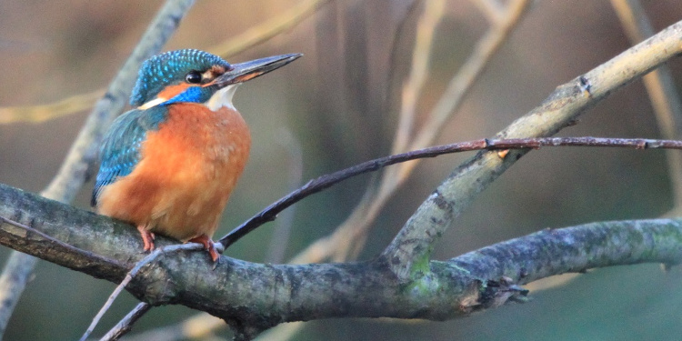

Brookmill Park lake is fed by water from the River Ravensbourne through a licensing agreement with the Environment Agency. It is concrete lined, protecting and inner waterproof layer over deeper concrete and is 1 metre deep at the centre. Concrete troughs underwater contain the root growth of the pond plants and prevent them spreading.
The Plane trees surrounding the lake have been kept during the repair work. You may see one or more of the following birds using the lake: Mallard, Grey Herons, Moorhens, Coots, and Grey Wagtails. You may also be lucky enough to catch a flash of blue as the Kingfisher dashes between the lake and the river beyond.
Environment
The lake is fenced for human safety and to reduce disturbance to wildlife but also to break the landing and take-off space needed by Canada geese, which in the past have outnumbered other birds. The bard mulch will encourage invertebrates such as ground beetles, spiders, millipedes, and woodlice which will in turn provide food for birds.
Any artificial planting and softening of the lake edge will be discussed through the Friends of Brookmill Park, who help maintain a healthy balance on the lake as the water plants grow back by not feeding the geese and not leaving bread on the ground which will attract rats. There will be enough naturally occurring food to support a smaller, healthier population of wild birds.
Contact the Brookmill Friends if you're interested in getting involved:Email us.